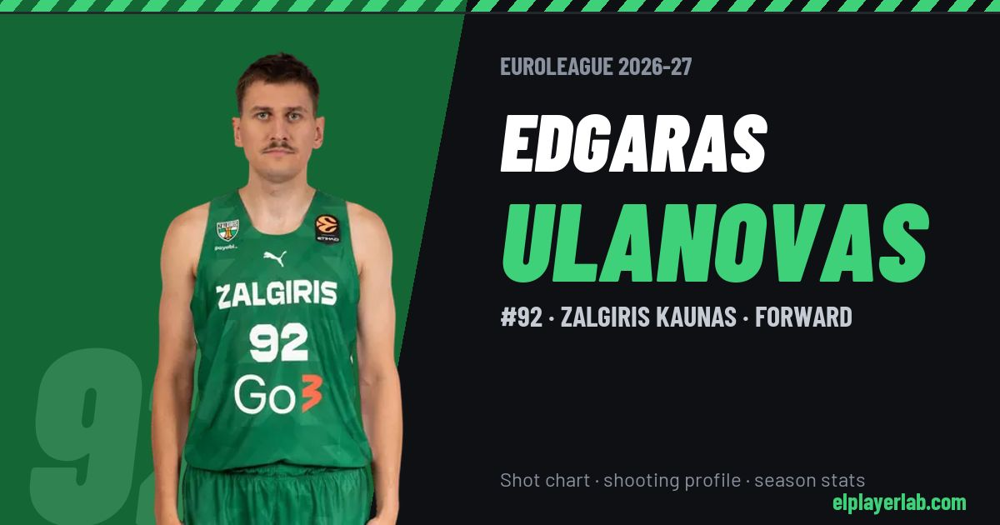

Zalgiris Kaunas · Euroleague 2026-27
Edgaras Ulanovas
#92 · Forward · Zalgiris Kaunas · 2026-27 · 3 games · 3.7 pts · 2.0 reb · 2.0 ast a game

- Number
- 92
- Position
- Forward
- Height
- 199 cm
- Weight
- 100 kg
- Born
- 1992-01-07
- Country
- Lithuania
Career
- Zalgiris 2021-2027
- Fenerbahçe 2020-2021
- Neptūnas (loan) 2013-2014
- Lietkabelis (loan) 2012-2013
- Pieno žvaigdžės (loan) 2012
- Baltai Kaunas (loan) 2011-2012
- BC Žalgiris-2 (loan) 2010-2011
- Žalgiris Kaunas 2010-2020
- Triobet Jonava 2009-2010
- Aiščiai-Artransa Kaunas 2008-2009
Euroleague Player Lab: shot charts, shooting profiles and season stats for every player, rebuilt after every game.